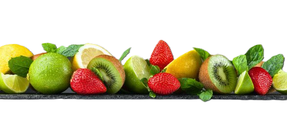

Manzana (Apple):
High in dietary fiber, supporting
digestive health. Contains antioxidants, which may contribute
to heart health. Apples are known to help regulate
blood sugar levels.
Coco (Coconut):
Rich in medium-chain fatty acids,
supporting heart health. Contains electrolytes, promoting
hydration. Provides fiber, supporting digestive health.
Melon:
Excellent source of hydration due to high water content.
Contains vitamins A and C, benefiting skin and immune system.
Provides potassium, supporting heart health.
Mango:
High in vitamins A and C, beneficial for vision and immune system.
Contains enzymes like amylases, aiding in digestion.
Provides a good amount of fiber for digestive health.
Fresa (Strawberry):
High in vitamin C and manganese, supporting immune health.
Rich in antioxidants, which may contribute to heart health.
Contains anthocyanins, beneficial for skin health.
Banana:
A popular tropical fruit, bananas are recognized for
their yellow, curved appearance and sweet, creamy texture.
Rich in potassium and vitamins, bananas support heart health
and aid digestion.

Lulo or Naranjilla
Is a tropical gem with a spiky
green exterior and tangy citrus-pineapple flavor. High in vitamin C
and antioxidants, lulo adds a refreshing twist to beverages and culinary
creations, supporting overall well-being.
Kiwi:
Excellent source of vitamin C, supporting immune health.
Provides vitamin K, beneficial for blood clotting and bone health.
